Managing Requirements for Fault-Tolerant Fuel Control System
Requirements Management Interface (RMI) provides tools for creating and reviewing links between Simulink objects and requirements documents. This demo illustrates linking model objects to Microsoft Office Documents, navigation of these links, generating requirements report and maintaining consistency of links. See Linking with DOORS demo for features specific to linking with requirements stored in IBM Rational DOORS.
Contents
- Open Example Model
- Viewing Existing Requirements
- Navigate to Document
- Requirements Links in Stateflow Charts
- Navigate from Requirements Document to Model Objects
- Creating More Requirements Links
- Requirements Links in Signal Builder Blocks
- Generating Requirements Report
- Requirements Consistency Checking
- Filtering Requirements on User Tag Property
Open Example Model
Requirements management features are demonstrated using an example model of a fault-tolerant fuel control system. You can open this model by running the following command:
open_system('slvnvdemo_fuelsys_officereq');
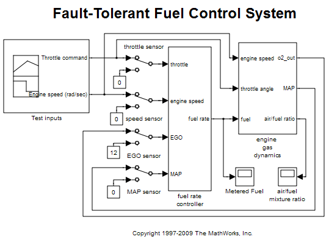 Viewing Existing Requirements
This demo starts with the model that only has a few requirements links. Use Tools > Requirements > Highlight model to highlight requirements. Orange highlighting corresponds to objects with linked requirements. Empty-fill highlighting is for subsystems whose children have links to requirements. Double-click the fuel rate controller block to open the subsystem and review child objects with requirements.
open_system('slvnvdemo_fuelsys_officereq/fuel rate controller'); rmi('highlightModel', 'slvnvdemo_fuelsys_officereq');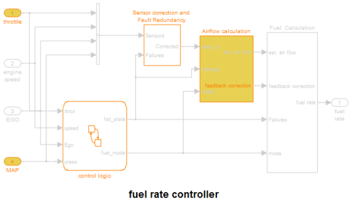
Navigate to Document
Right-click the Airflow calculation block in fuel rate controller subsystem and select Requirements > Mass airflow estimation at the top of the context menu.
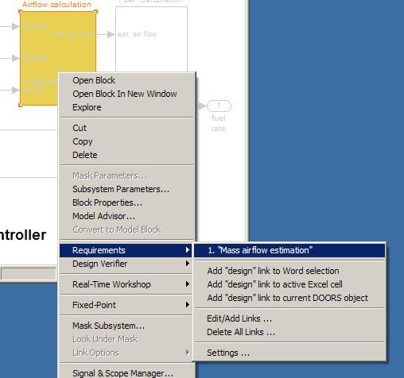
This opens the linked document and selects the target content.
Requirements Links in Stateflow Charts
Double-click the control logic chart block in the fuel rate controller subsystem to open the chart. States and transitions linked to requirements are highlighted. Right-click the Rich Mixture state, select Requirements and follow the link at the top to view related documentation.
Navigate from Requirements Document to Model Objects
In the slvnvdemo_FuelSys_DesignDescription.docx from the previous step, make sure ActiveX controls are enabled: if you see Security Alert bar at the top of the document window, click Options to open ActiveX control settings, select Enable this content, press OK.
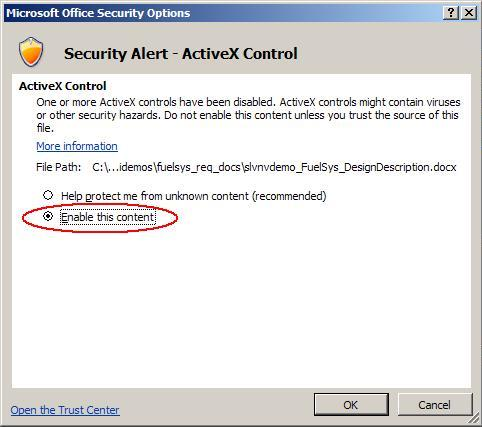
Now find section 3.3 Manifold pressure failure mode in the document and double-click the Simulink icon at the end of subheader. This displays a relevant Simulink subsystem diagram with the target object highlighted. Close all model windows and repeat navigation from the document. Diagrams or charts are opened as necessary as long as model file can be located.
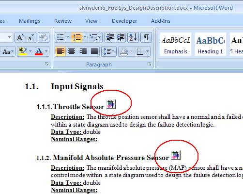
Creating More Requirements Links
To avoid unintended modification to requirements documents, the default setting is to not insert ActiveX icons into documents. Created links allow navigation from Simulink to documents, but not in the other direction. To configure your settings for creating bi-directional links, do the following:
- Select Tools > Requirements > Settings.
- Ensure that Modify documents to include links checkbox is selected.
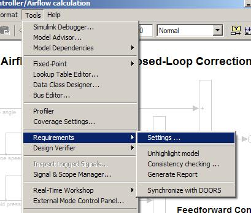

Now create new links similar to the ones you've just navigated:
- In the slvnvdemo_FuelSys_DesignDescription.docx, find section 2.2 Determination of pumping efficiency.
- Select the entire header with a mouse.
- Right-click the Pumping Constant block in the Airflow calculation subsystem.
- Select Add link to Word selection to create a link.
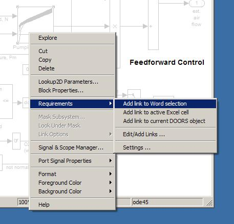
Right-click Pumping Constant block again. You should now see the newly created link at the top of the context menu. Click it to navigate to the target in section 2.2 of slvnvdemo_FuelSys_DesignDescription.docx.
Requirements Links in Signal Builder Blocks
Signal links are attached to individual groups of signals, not to the Signal Builder block as a whole. Use this sort of links for test cases that are defined as Signal Builder groups.
- Double-click the Test inputs Signal Builder block to see configured groups of signals. Normal operation signals are periodically depressed accelerator pedal and constant engine RPM.
- Click the Show verification settings button at the end of toolbar to display the Verification panel.
- If you do not see the Requirements panel below the Verification block settings, click the Requirements display button at the top of the panel.
- Right-click the link label under Requirements and select View to open the related requirements data, this time in a Microsoft Excel document. The Simulink icon in the linked cell allows navigation back to this signal group.
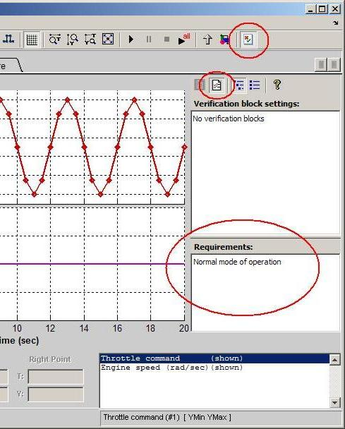
- A transient RPM instability is modeled by a rectangular pulse on Engine speed data in the second group of signals.
- Suppose you need to link RPM sensor failure signal group to a different cell range in your Excel file. Switch to that tab, right-click in the empty Requirements and select Edit/Add Links, to open a dialog box. You can either enter new link information manually, or use the Excel button to link to the current selection. Press OK to save the new link.
- Right-click the new label under Requirements area and select View to navigate to the target cell in TestScenarios file.
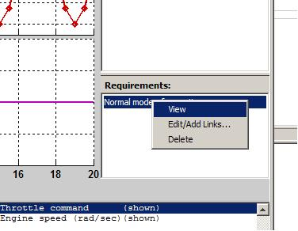
Generating Requirements Report
Select Tools > Requirements > Generate report to automatically generate a report on all requirements links in the model. The default report is generated according to the template that is included with the product.
The Report Generator interface provides total control over the content of generated reports, including the creation of entirely new templates.
A subset of options is also accessed via the Report tab of Tools > Requirements > Settings dialog box. For example, you may want to disable Highlight the model before generating report checkbox if the resulting report will be printed in black-and-white or viewed via projector, or you may want to include lists of objects that have no links to requirements.
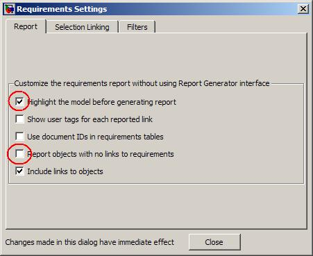
Requirements Consistency Checking
Use Model Advisor to automatically detect and fix inconsistencies in requirements links data. Click Tools > Requirements > Consistency checking menu item to bring up Model Advisor with only the RMI check points activated. The links are checked for missing documents, unmatched locations in documents, unmatched labels for selection-based links, and inconsistent path information.
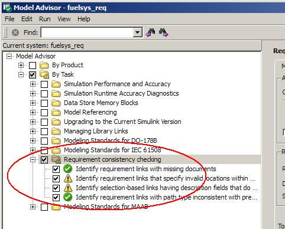
Click Run selected checks button to verify the consistency of links in your model. Click individual check points to view the results in the right-side panel. In this example, one of the links points to invalid location in a document:
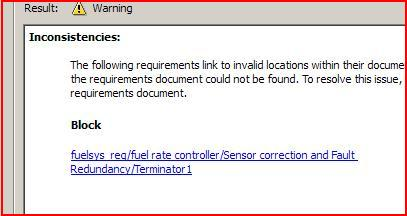
Another link has a label that does not match the original selection when the link was created:
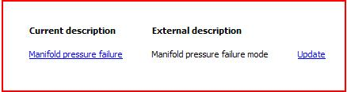
Click Fix or Update in Model Advisor report to automatically resolve reported inconsistencies. Rerun the checks to ensure reported problem is resolved.
Filtering Requirements on User Tag Property
Requirements links in Simulink support an optional User Tag property that can store any comma-separated string values. Use these tags to distinguish between different types of links, for example, functional requirements links, design description links or testing details links. You can specify the tags when creating new links, or later via Edit/Add Links dialog box.
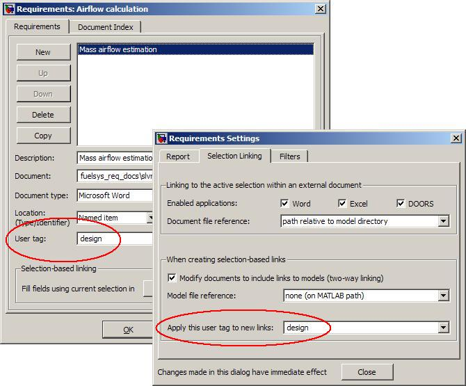
You can later use these tags to focus your work on a subset of links, or to automatically strip a subset of links from the model. This is controlled via Filters tab of Requirements > Settings dialog box.
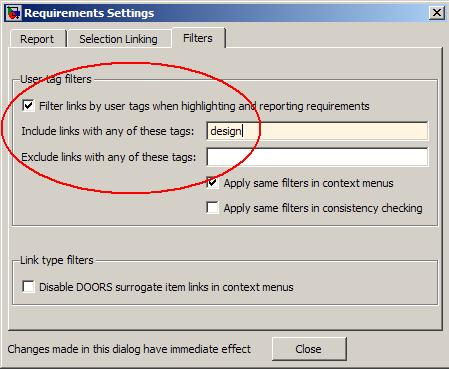
When model requirements are "highlighted", modifying the filter setting updates the view to only show the matching requirements links. Requirements links in this demo model are tagged with one of the following: "design", "requirement", "test". The view adjusts accordingly when you modify filter settings. For example, Highlight requirements that are tagged "design".
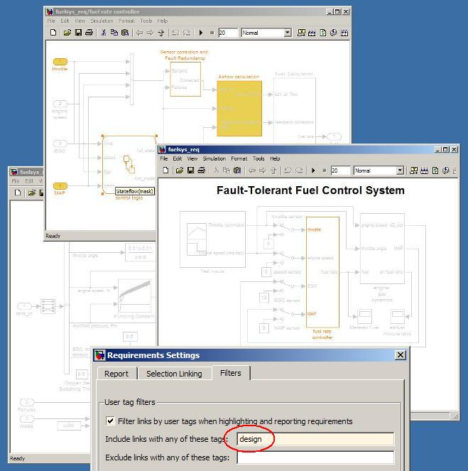
Highlight requirements that are tagged "requirement".
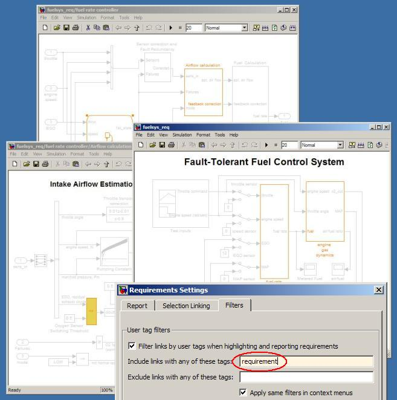
Highlight requirements that are tagged "test".
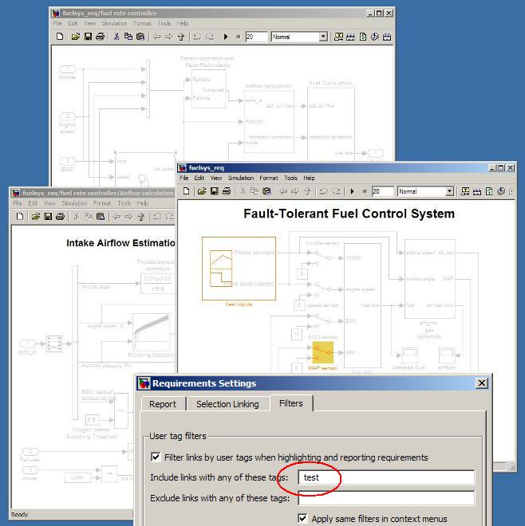
If you generate a report with User Tag filters enabled, your report content is filtered accordingly. This may be useful to focus your report on a particular subset of links.
If you run consistency checking with User Tag filters enabled, only links that match the given filter settings are checked. Use this to target your consistency checking to a required subset of links.